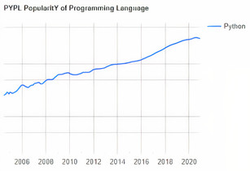
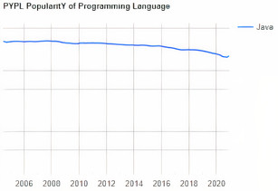
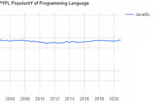

Введение
В современном мире всё большую популярность приобритает сфера IT. В ней вы можете получить большие зарплаты, возможность работать из любой точки мира и менять мир! В этой сфере не обойтись без языков программирования - одного из гланых инструментов современных программеров. Но для всех, кто хочет влиться в новую для себя сферу существует одна проблема - языков программирования стало так много, что совсем непонятно, с чего лучше всего начать. Этот сайт - выжимка из многих статей интернета, которая поможет начинающим программистам выбрать идеальный для них язык программирования. Также мы предложим Вам несколько интересных статей, также многое раскрывающие о мире IT.
Сферы IT
Все понимают, что IT включает в себя много сфер. В зависимости от выбронной Вами сферы, Вам нужно будет учить разные технологии и языки программирования. Ниже представлены основные сферы и технологии/языки программирования для работы в них.
Разбор лидеров
Python
Сферы
- Веб разработка (Django)
- Десктоп разработка
- Data science
- Статья , где можно узнать больше
Python на данный момент является самым популярным языком программирования.
Java
Сферы
- Андроид разработка
- Серверные приложения
- Веб разработка
- Программные средства
- Большие данные
- Статья , где можно узнать больше
Несмотря на значительное снижение попоулярности Java, этот язык программирования до сих пор остаётся очень востребованным.
Javascript
Сферы
- Веб разработка
- Разработка нативных приложений
- Серверная разработка
- Десктоп приложения
- Статья , где можно узнать больше
JavaScript является очень перспективным языком программирования. Он относительно простой, но популярный
Заключение
Этот сайт был сделан специально для конкурса “Спутник” в качестве продукта для научной работы ”Языки программирования. Выбор инструментов, технологий, языков программирования” направления “Информационные технологии”.
Вся информация на этом сайте является собранной и систематизированной со многих статей из сети интернет. Данный ресурс направлен на помощь будущим программистам в выборе языков программирования.
Если у Вас есть вопросы или претензии, прошу связаться со мной через указанные контакты.
Несколько полезных статей в заключение:
Языки программирования и их применение;
15 языков программирования, знание которых гарантирует самые высокие зарплаты в IT
Дизайн - Figma + Zeplin.
Фото - unsplash.com
Иконки - icomoon.io / flaticon.com
Вёрстка - html + css (scss) + js.
Вся информация на этом сайте является собранной и систематизированной со многих статей из сети интернет. Данный ресурс направлен на помощь будущим программистам в выборе языков программирования.
Если у Вас есть вопросы или претензии, прошу связаться со мной через указанные контакты.
Несколько полезных статей в заключение:
Языки программирования и их применение;
15 языков программирования, знание которых гарантирует самые высокие зарплаты в IT
Дизайн - Figma + Zeplin.
Фото - unsplash.com
Иконки - icomoon.io / flaticon.com
Вёрстка - html + css (scss) + js.